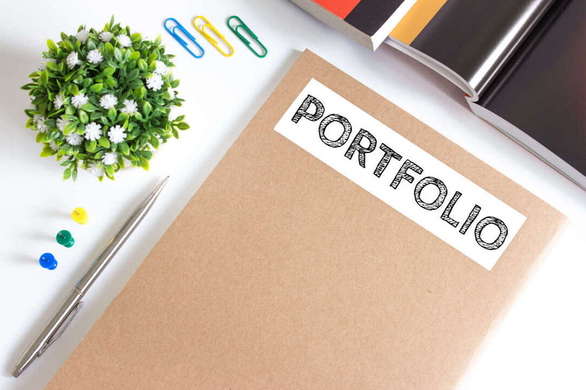
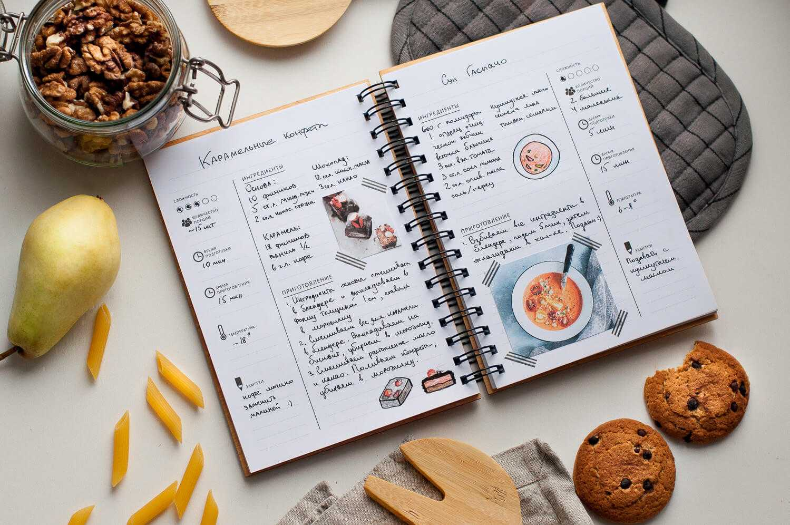
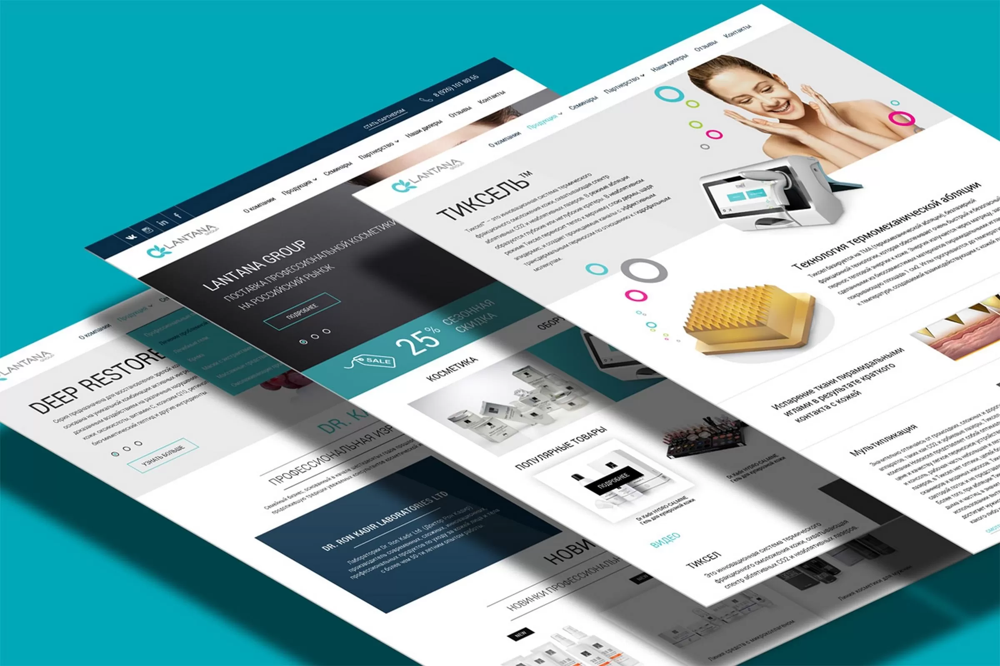
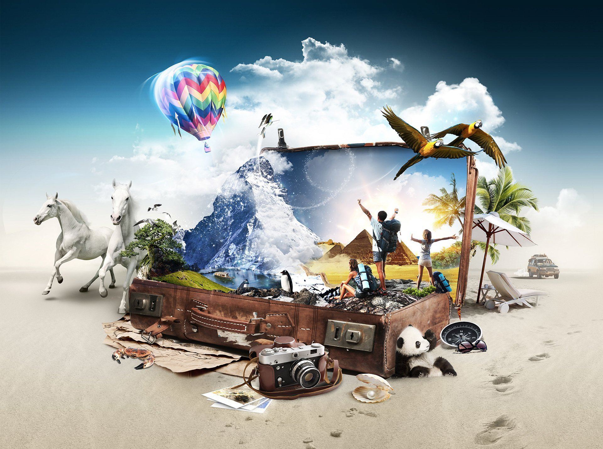

5 различных идей для создания 1 вашего сайта
10.03.2025 leksusSZN101 HTML/CSS
Не можете придумать, с чего начать практиковать свои навыки HTML, CSS и JavaScript?
Вот несколько интересных идей, которые, вероятно, не приходили вам в голову.
Мы предлагаем вам 5 проверенных идей для вашего первого веб-сайта, которые не только просты
в реализации, но и принесут вам реальные результаты: от популярности до дополнительного заработка.
1. Личный блог:
.webp)
Это классический и простой вариант. Вы можете писать о своих увлечениях, опыте, путешествиях или
о чем угодно, что вас интересует. Это поможет вам освоить основы веб-дизайна, контент-менеджмента
и SEO. Монетизация не обязательна на первом этапе, но может быть реализована позже через рекламу
или партнерские программы
Выберите тему, которая вам интересна, и стиль, который вам близок. Регулярно публикуйте новые записи,
и ваш блог станет популярным! Не забывайте про качественные фотографии и грамотный текст.
2. Сайт-портфолио:

Если у вас есть какие-либо навыки (дизайн, фотография, программирование), создайте сайт-портфолио,
чтобы продемонстрировать свои работы потенциальным клиентам. Это отличная возможность для само-
презентации и поиска заказов.
Вместо простого списка проектов, расскажите историю о каждом из них. Что вас вдохновило? Какие были
трудности и как вы их преодолели? Какие результаты были достигнуты? Это добавит глубины и покажет
не только навыки, но и ваш подход к работе. Можно использовать видео, интерактивные элементы и подроб-
ные описания. Подходит для дизайнеров, разработчиков, писателей, фотографов
3. Рецепты для готовки

Если вы любите готовить, создайте сайт с вашими любимыми рецептами. Вы можете добавлять фотографии,
видео и описания. Это не только позволит поделиться вашими кулинарными навыками, но и поможет освоить
работу с изображениями и структурой сайта. От простых повседневных блюд до сложных праздничных угощений
Возможность публиковать статьи на кулинарные темы, советы, истории о еде, обзоры кухонной техники и т.д.
Это поможет привлечь больше трафика и удержать аудиторию.
4. Информационный сайт (форум)

Выберите тему, которая вам интересна и в которой вы разбираетесь. Это может быть всё что угодно: виды
орхидей, история вашей любимой группы, гайды по игре. Цель – научиться структурировать информацию
и создавать понятный интерфейс.
Информация о местных магазинах, ресторанах, достопримечательностях в конкретном городе или районе.
Можно добавить отзывы пользователей Можно использовать готовые шаблоны сайтов или платформы типа
Wix/Squarespace
5. Туристический сайт

Если вы живете в интересном месте, создайте сайт с рекомендациями для туристов. Это может включать описа-
ние достопримечательностей, ресторанов, отелей и полезных советов.
Для каждого пункта необходимы качественные фотографии, подробные описания и актуальная информация. Важно
сделать сайт удобным для навигации и привлекательным визуально. Можно добавить интерактивные элементы,
например: карты, панорамы и отзывы пользователей.